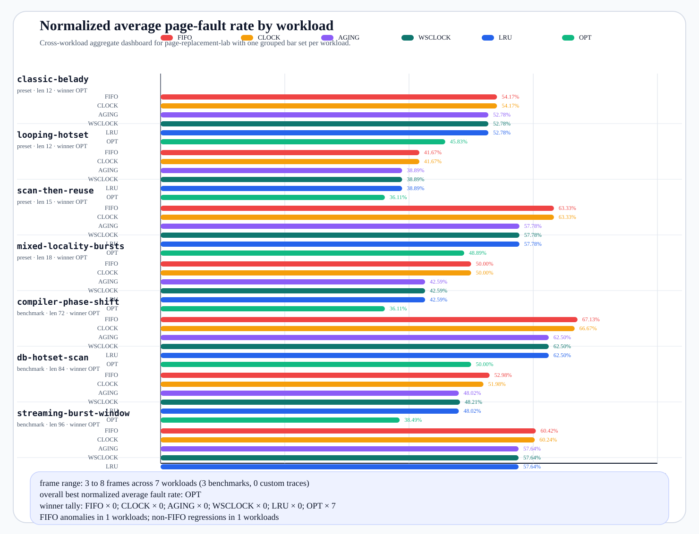

Page Replacement Aggregate Dashboard
Cross-workload summary for page-replacement-lab. This dashboard normalizes page faults by reference length so compact presets, heavier benchmark traces, and imported custom traces can share the same slide-ready comparison chart.
- 7 workloads
- 3 trace benchmarks
- 0 custom traces
- 3–8 frame range
- OPT overall normalized winner
- 1 FIFO anomaly workloads
- Winner tallyFIFO × 0, CLOCK × 0, AGING × 0, WSCLOCK × 0, LRU × 0, OPT × 7
Downloads: SVG chart · CSV table · JSON payload
{kind=link}
Normalized average page-fault rate chart

Overall algorithm summary
| Algorithm | Mean normalized fault rate | Mean average faults |
|---|---|---|
FIFO | 55.67% | 25.83 |
CLOCK | 55.44% | 25.64 |
AGING | 51.46% | 24.00 |
WSCLOCK | 51.48% | 24.02 |
LRU | 51.46% | 24.00 |
OPT | 42.07% | 18.50 |
Workload breakdown
| Type | Workload | Description | Best normalized winner | FIFO anomaly | Other regressions | Average fault rates |
|---|---|---|---|---|---|---|
| preset | classic-beladylen 12 preset:classic-belady | classic Belady anomaly reference string that makes FIFO regress from 3 to 4 frames | OPT 45.83% | yes | 1 | FIFO 54.17%CLOCK 54.17%AGING 52.78%WSCLOCK 52.78%LRU 52.78%OPT 45.83% |
| preset | looping-hotsetlen 12 preset:looping-hotset | small hot working set with a short burst page that rewards recency-aware policies | OPT 36.11% | no | 0 | FIFO 41.67%CLOCK 41.67%AGING 38.89%WSCLOCK 38.89%LRU 38.89%OPT 36.11% |
| preset | scan-then-reuselen 15 preset:scan-then-reuse | large sequential scan followed by a tighter reuse window to show cache pollution pressure | OPT 48.89% | no | 0 | FIFO 63.33%CLOCK 63.33%AGING 57.78%WSCLOCK 57.78%LRU 57.78%OPT 48.89% |
| preset | mixed-locality-burstslen 18 preset:mixed-locality-bursts | alternates hot-loop bursts with cold misses to mimic uneven interactive workloads | OPT 36.11% | no | 0 | FIFO 50.00%CLOCK 50.00%AGING 42.59%WSCLOCK 42.59%LRU 42.59%OPT 36.11% |
| benchmark | compiler-phase-shiftlen 72 benchmark:compiler-phase-shift | larger compiler-style trace with parser hot loops, a code-generation scan, and optimizer table bursts | OPT 50.00% | no | 0 | FIFO 67.13%CLOCK 66.67%AGING 62.50%WSCLOCK 62.50%LRU 62.50%OPT 50.00% |
| benchmark | db-hotset-scanlen 84 benchmark:db-hotset-scan | dashboard-style hot pages interrupted by analytics scans and checkpoint bursts | OPT 38.49% | no | 0 | FIFO 52.98%CLOCK 51.98%AGING 48.02%WSCLOCK 48.21%LRU 48.02%OPT 38.49% |
| benchmark | streaming-burst-windowlen 96 benchmark:streaming-burst-window | stream-processing sliding window with cold backfill bursts and shifting hotsets | OPT 39.06% | no | 0 | FIFO 60.42%CLOCK 60.24%AGING 57.64%WSCLOCK 57.64%LRU 57.64%OPT 39.06% |